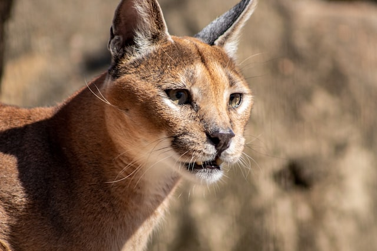

Floppa Fan Site
This medium-size wildcat roams the savannas, deserts, and forests of much of Africa and parts of the Middle East.
Its coat is typically a tawny or reddish gold with a white chin, throat, and underside.
-- Nat Geo
